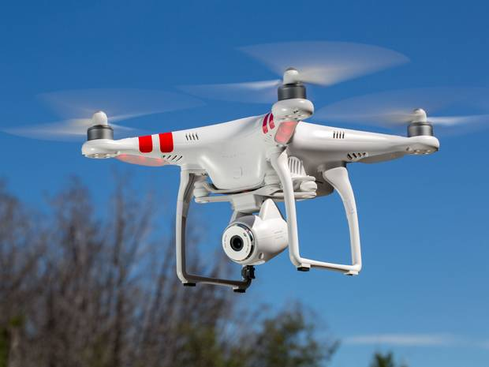
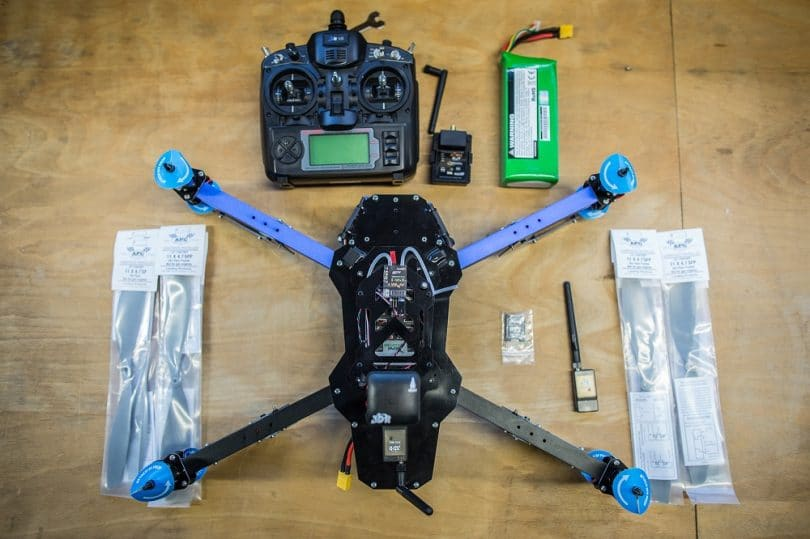
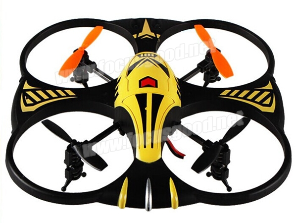
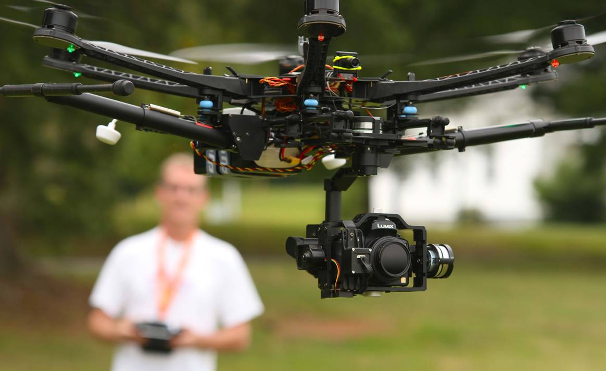
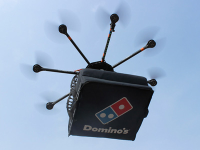
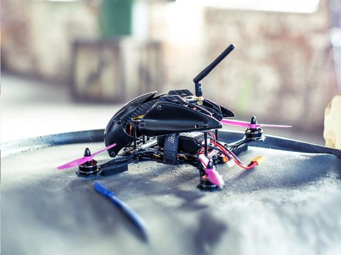

Types of Drones
Looking At The various Drones
Quadcopters
Most quadcopters are headless models that don’t require you to keep it pointing in one direction for it to be controlled properly. Some models may even come with a camera built on the inside. Others will at least offer a mounting surface that allows you to secure a small HD camera on it. A quadcopter, like with most other drones, is made with a battery. This can be recharged as needed to give your drone power. However, flight times can be short and most models would be lucky to get 20 minutes flight time.
Drones that are ready-to-fly
RTF drones are Ready-to-Fly drones. That is, you can get these drones to start working for you right after you buy it, take it out of the box and charge it up. These Modals do not require you to set it up or build anything, this is typically only for smaller quadcopters and is for those who are new to drone flying.
UAVs
UAV quadcopters are headless models that don’t require you to keep it pointing in one direction in order for it to be controlled properly. They are often small in size and can be flown right out of the box. Some models may even come with a camera built on the inside. Others will at least offer a mounting surface that allows you to secure a small HD camera on it.
Photography Drones
Photography drones are typically designed with HD-quality cameras that are designed with guards around their lenses. The guards help to keep the lenses from being at risk of damages from weather conditions in an area or any debris that might fly around. A photography drone has to to keep steady when flying. Drones like these often have software in them which keeps the drone steady in strong winds.
Delivery Drones
Delivery drones are designed to transport materials. A delivery drone will work with an anchor or basket-like feature on the bottom part. This attaches to the drone’s body to allow it to carry items of all sorts. Delivery drones are useful for when someone needs to get an item that is a few pounds in weight transported through a particular distance. These drones are especially being developed by Amazon to deliver items in certain parts of the country.
Drones used for racing
Racing drones can work quicker with controllers that require their own unique radio connections. These drones can be designed with slim bodies and will not be impacted by wind conditions. These drones require a much stronger engine than a more traditional electric motor. Racing Drones is becoming more popular as new tecnology is being developed such as wearable headsets to view the drones in flight